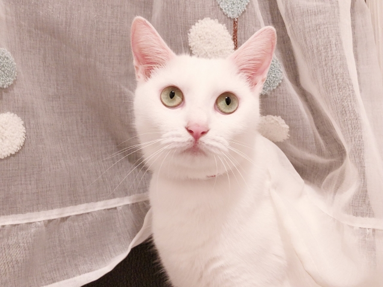
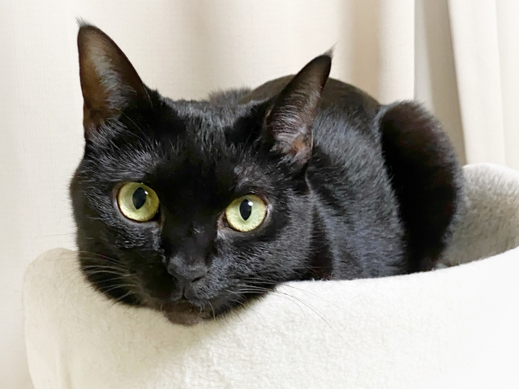
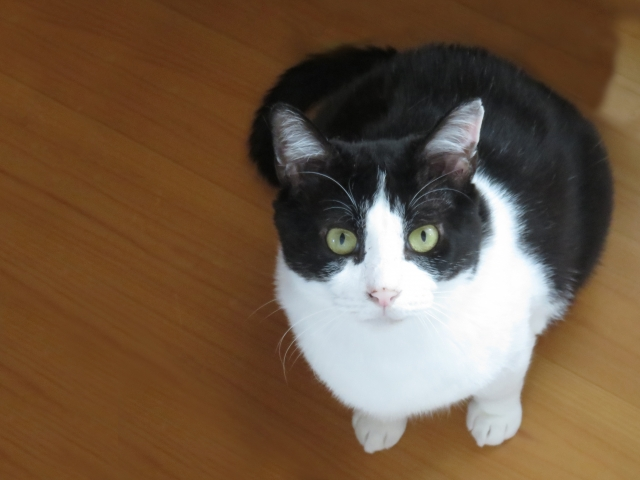
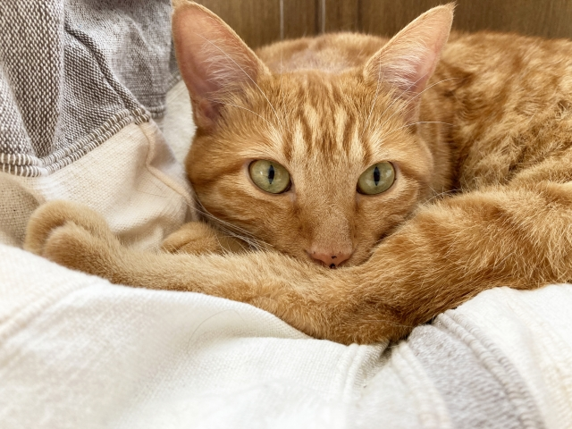
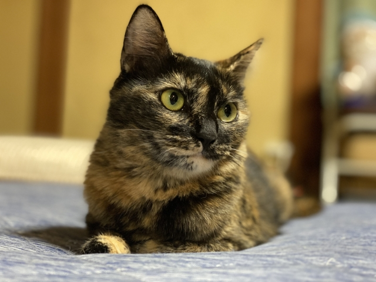

絞り込み
5匹の猫がいます
～
猫の一覧

ミルク
好奇心旺盛で、ふわふわの白い毛並みがチャームポイント。

スミ
穏やかで優しい性格の男の子。他の猫ちゃんともすぐ仲良くなれます。

ハチ
白黒ハチワレの女の子。活発で、おもちゃで遊ぶのが大好きです。

トラ
人懐っこくて甘えん坊。人と過ごすことが好きなタイプです。

サビ
大人しくて慎重な性格。とても賢い女の子です。
条件に合う猫が見つかりませんでした…
絞り込み条件を少しゆるめるか、リセットしてください。